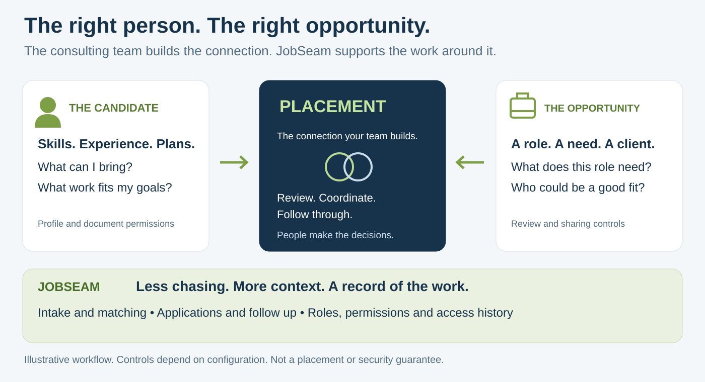

JobSeam
PEOPLE. OPPORTUNITIES. PLACEMENTS.The right person. The right opportunity.
Every step connected.
The consulting team builds the connection. JobSeam gives the work around it a shared home.

Illustrative workflow. People make the decisions. No placement outcome is guaranteed.
One person. One connected workspace.
Keep the profile, preferences, applications and next steps together. Invite the consultant to review details and contribute updates.

Actual light-theme interface. Synthetic sample data, not a customer profile.
JobSeam
PEOPLE. OPPORTUNITIES. PLACEMENTS.Less chasing. More context.
A record of the work.
Keep the next step visible.
Follow submissions through client review, interviews, offers and placement. See where the work stands.

Sample submissions. Not actual placement results or conversion rates.
Find a fit. Read the evidence.
Review saved matches and skill gaps. Request deeper AI analysis when needed.

Illustrative scores. Not a prediction of hiring success.
Be clear about access.
Use roles and document permissions. Review who can access a file and recorded activity.

Product view, not a security certification.
Screenshots show the implemented interface with synthetic test data. Features depend on deployment, permissions, configuration and provider access. AI results and document drafts need human review. No placement, security or legal compliance outcome is guaranteed. JobSeam is not a government filing service.